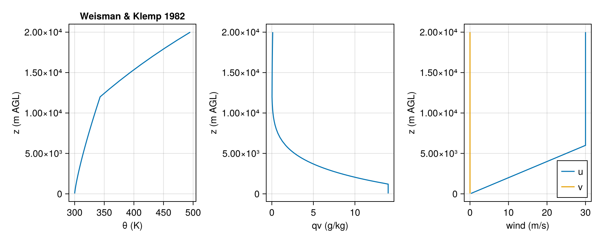
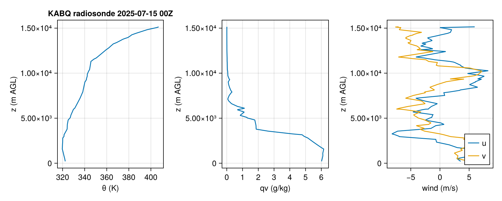
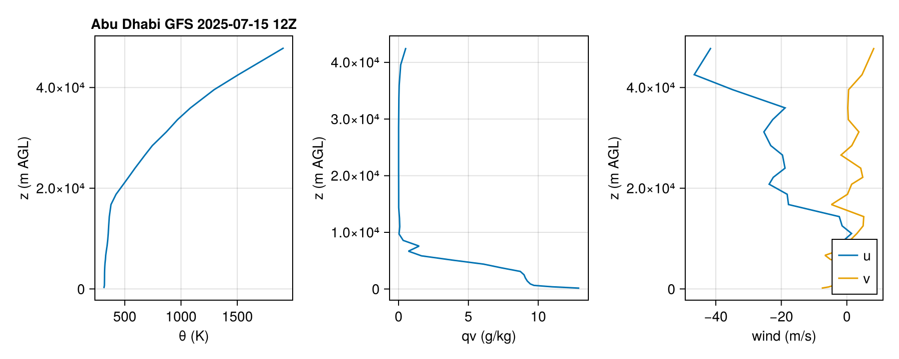

Bundled example soundings
Three soundings ship with the package. Each one is small enough to live in the repo (under data/soundings/) and to be loaded by tests and docs.
Weisman & Klemp (1982)
The canonical idealized supercell sounding: surface θ = 300 K with qv capped at 14 g/kg, tropopause at 12 km, unidirectional linear shear to 30 m/s at z = 6 km. Generated reproducibly from the analytic formulas in W-K 1982; see data/soundings/generate_weisman_klemp_1982.jl.
s = read_sounding(example_sounding(:weisman_klemp_1982))
plot_sounding(s; title = "Weisman & Klemp 1982")
KABQ radiosonde — 2025-07-15 00Z
Observed radiosonde from Albuquerque, NM. The station sits at ~1620 m MSL, so the surface pressure is well below 1000 mb even though the level column starts near the ground (AGL).
s = read_sounding(example_sounding(:kabq_radiosonde))
plot_sounding(s; title = "KABQ radiosonde 2025-07-15 00Z")
Abu Dhabi GFS point forecast — 2025-07-15 12Z
GFS forecast vertical profile. The native data extends well into the mesosphere; moisture is not defined that high, and the file records nan for qv at those levels. LegacyConnectors preserves the NaNs in the parsed Sounding; the plot below masks them.
s = read_sounding(example_sounding(:abudhabi_gfs))
plot_sounding(s; title = "Abu Dhabi GFS 2025-07-15 12Z")